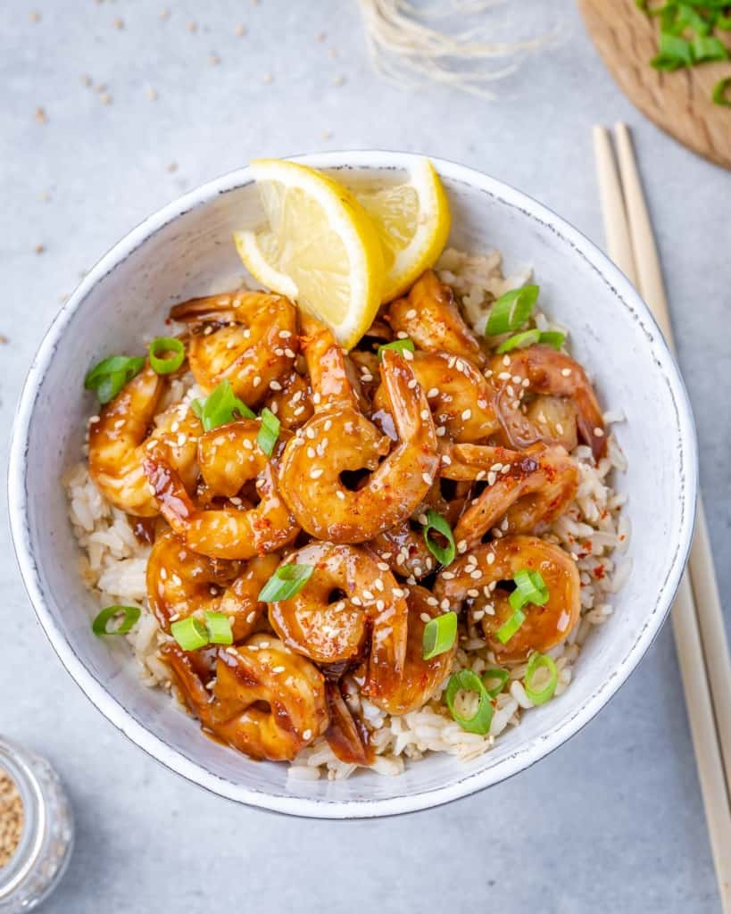

Teriyaki Shrimp recipe
Home

If you love shrimp, this easy-to-make Teriyaki Shrimp
recipe will become your go-to shrimp recipe of all time because
it only takes 20 minutes to make. A simple healthy shrimp recipe that’s
perfect for the whole family to enjoy.
One of our go-to proteins is shrimp. They are easy to cook and
oftentimes don’t require much time to prepare. We also love the fact
that shrimp is low in carbs and fat, and has a high protein content.
If you are pressed for time and looking for a quick shrimp dinner recipe
to prepare for the family, this easy shrimp teriyaki recipe will come in
handy. It will take you just about 20 minutes to make and if you are just
slow in the kitchen 30 minutes tops! Do you meal prep? Now you have
another simple healthy shrimp recipe to prepare ahead for the meal plan!
Ingredients:
To make this easy shrimp teriyaki, you will need the following ingredients. Full measurements are listed further down below in the recipe card.
For the teriyaki sauce:
- Garlic cloves: use fresh garlic if possible.
- Ginger: the flavors would be much better if you use freshly grated ginger. If you have a hard time finding fresh ginger, you can use ginger powder.
- Crushed chili (red pepper flakes): if you are feeding littles ones, you may skip this ingredient.
- Soy sauce: use low sodium coconut amino
- Broth: we used fish broth, but you may use vegetable broth, orange juice, or water.
- Corn starch: this ingredient will help thicken the sauce. if you are avoiding cornstarch, use arrowroot powder or flour.
- Honey: if you don’t have any honey, you may use brown sugar.
- Rice white vinager: this will taste better than the other vinegars but you can always improvise.
For the shrimp:
- Olive oil: any other oil works, try sesame oil.
- Shrimp: use large and raw shrimp. Remove the tails if you prefer. If you don’t like shrimp, you may use chicken or tofu.
- Olive oil: any other oil works, try sesame oil.
- Green onions: for garnishing and added flavor.
- Sesame seeds: to garnish
- Optional to serve: cooked jasmine rice, shredded carrots, lemon wedges.
Directions:
- In a small bowl whisk all the teriyaki sauce ingredients.
- Heat the oil in a large skillet over medium heat. Add the shrimp and cook for 3-4 minutes, stirring halfway.
- Pour over the teriyaki sauce, and cook, stirring continuously for 1-2 minutes. The shrimp is done when it’s pink and opaque, while the sauce should be thick to evenly coat the shrimp.
- Garnish with green onions, sesame seeds and serve with cooked rice and shredded carrots.
Home